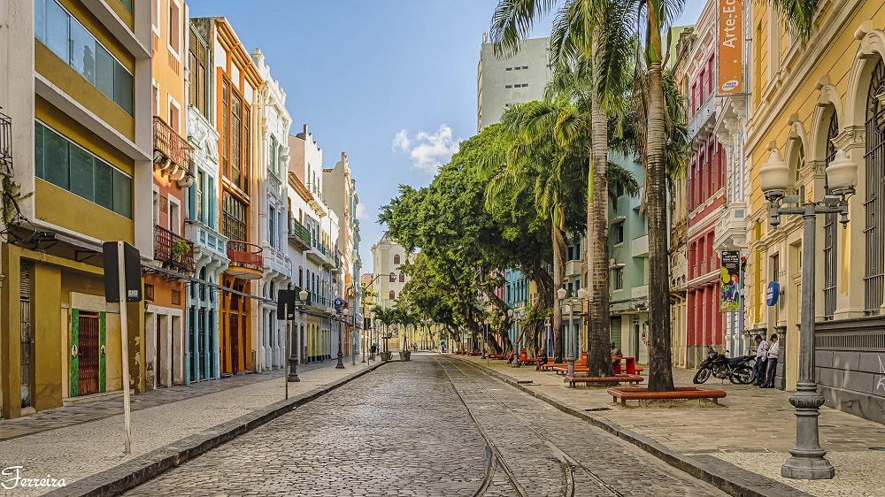

Rua do Bom Jesus
Considerada uma das ruas mais bonitas do mundo, a Rua do Bom Jesus encanta com sua arquitetura colorida e histórica. Além disso, ela é palco do antigo edifício da primeira sinagoga das Américas, a Kahal Zur Israel.

Torre Malakoff
A Torre Malakoff é um monumento histórico construído no século XIX. Originalmente projetada como um observatório astronômico, ela agora funciona como um espaço cultural, abrigando exposições e eventos.